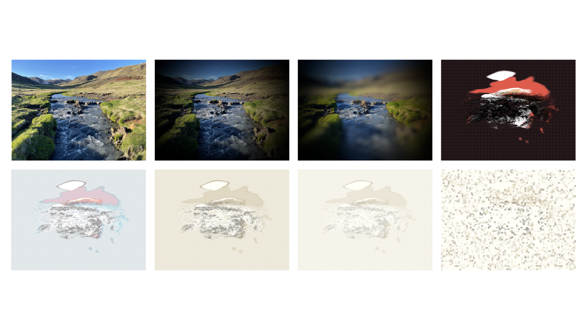
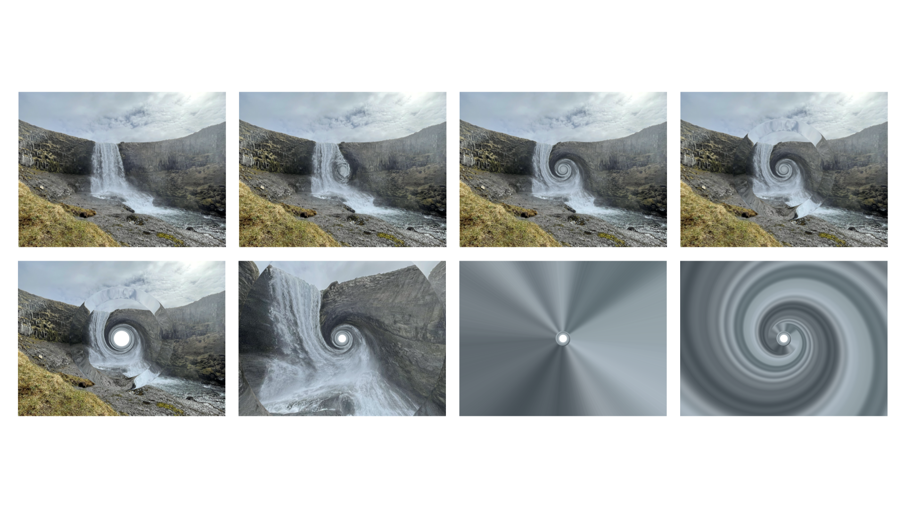
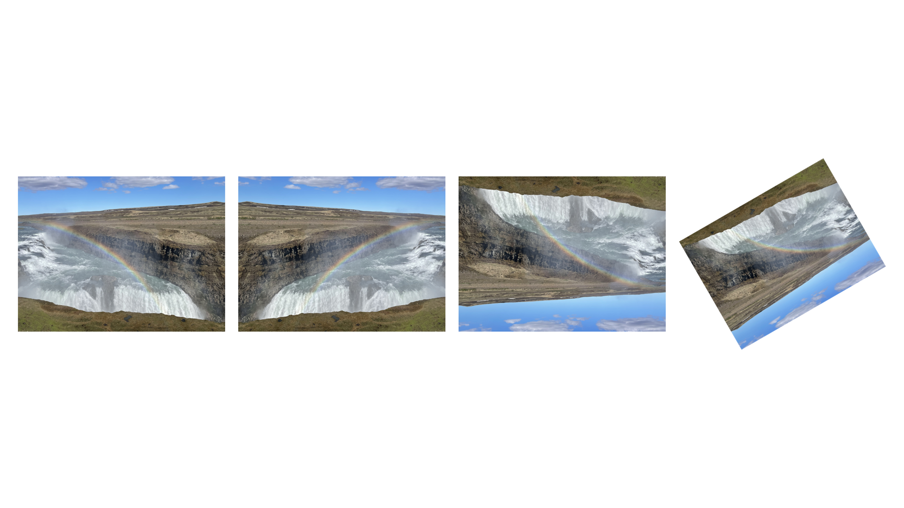

A Python package for manipulating images using Objective-C frameworks.
GitHub Repository | Support Development
from macimg import Image
from macimg.filters import (
Bloom,
Comic,
Crystallize,
Edges,
Invert,
Sepia,
Vignette
)
# Load an image
img = Image("assets/Iceland1.jpg")
img.show_in_preview()
# Apply a single filter
Vignette(intensity=10).apply_to(img)
img.show_in_preview()
# Apply multiple filters
filters = [Comic(), Edges(), Invert(), Sepia(), Bloom(), Crystallize(crystal_size=50)]
for index, filter in enumerate(filters):
filter.apply_to(img)
img.show_in_preview()
The code above produces the following sequence of images:

from macimg import Image
from macimg.distortions import (
Bump,
CircleSplash,
Hole,
LightTunnel,
Pinch,
TorusLens,
Vortex,
)
# Load image
img = Image("assets/Iceland2.jpg")
img.show_in_preview()
# Apply multiple distortions
distortions = [Bump(radius=500, curvature=1), Vortex(radius=750, angle=1000.0), TorusLens(radius=1000, width=250), Hole(), Pinch(intensity=1), CircleSplash(), LightTunnel()]
for index, distortion in enumerate(distortions):
distortion.apply_to(img)
img.show_in_preview()
The code above produces the following sequence of images:

from macimg import Image
from macimg.transforms import (
Flip,
Rotate,
)
# Load image
img = Image("assets/Iceland3.jpg")
img.show_in_preview()
# Apply multiple transformations
transforms = [Flip("horizontal"), Flip("vertical"), Rotate(degrees=30)]
for index, transform in enumerate(transforms):
transform.apply_to(img)
img.show_in_preview()
The code above produces the following sequence of images:
If you have any questions about macimg that are not addressed in the documentation, or if you just want to talk, feel free to email stephen.kaplan@maine.edu.